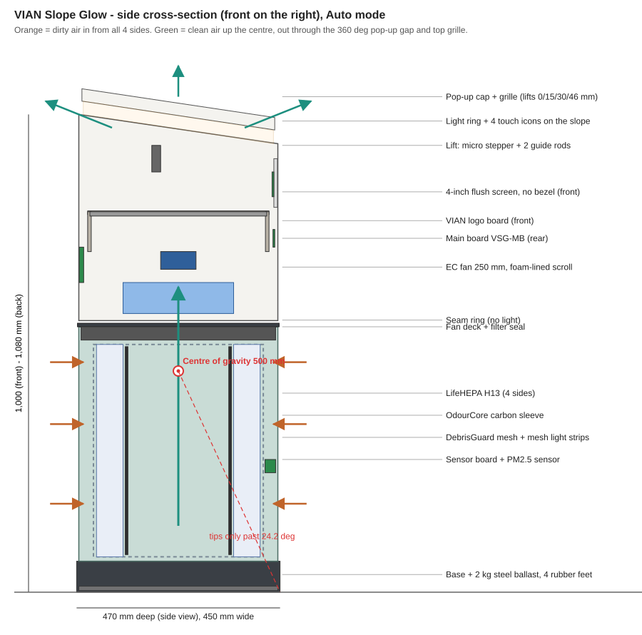
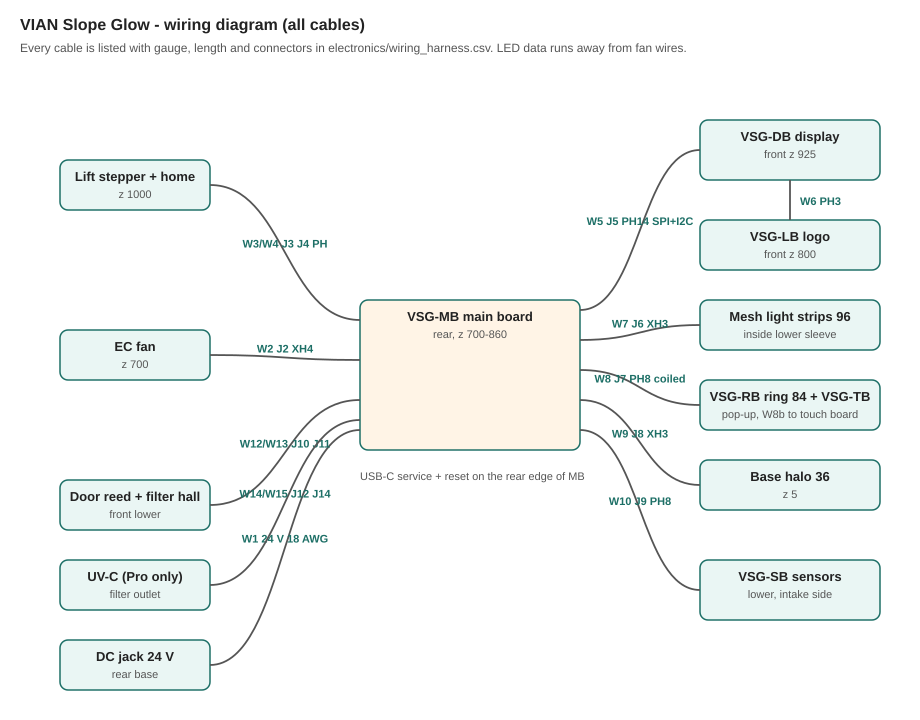
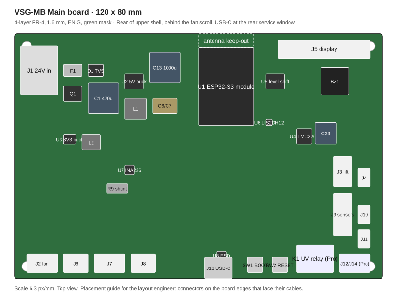
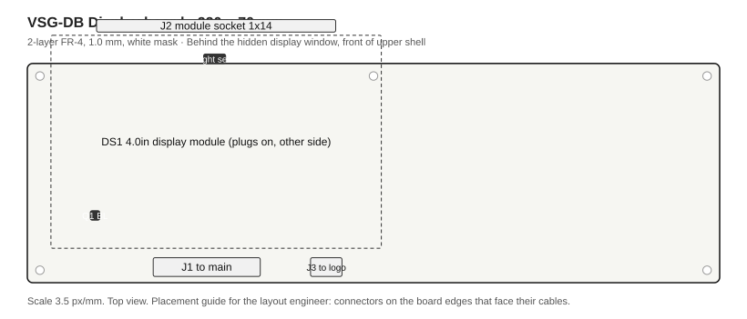
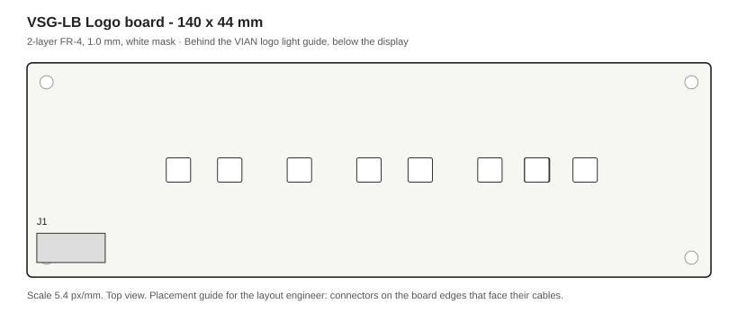
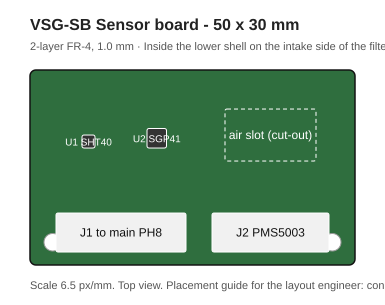
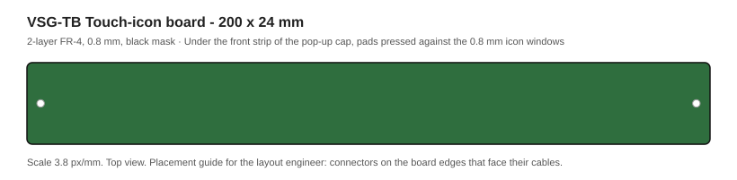
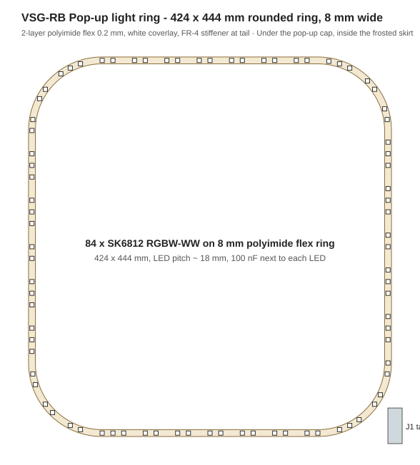

VIAN Home 700 air purifier
Everything a factory needs to make this unit: body parts and materials, every port and opening, the filter, 6 circuit boards with BOM and netlists, the full wiring harness, display, lights, pop-up lift, firmware source, 3D-print files, assembly, tests and certifications. Every file downloads on its own.
Drag the 3D model to rotate. Buttons under it switch fan mode (the top pops up), light effect and colours.
Features and colours
| Area | Feature |
|---|---|
| Air | 360 deg intake, 360 deg pop-up outlet, about 700 m3/h CADR target, rooms up to about 640 sq ft at that CADR (a 700 sq ft claim needs about 765 m3/h) |
| Filter | 3 stages: DebrisGuard washable mesh, LifeHEPA H13 up to 5 years, OdourCore carbon about 12 months |
| Screen | 4.0-inch flush screen, no bezel, 9 pages, readable from 5 m |
| Controls | 4 hidden touch icons on the slope: Power, Previous, Next, Light; everything else in the app |
| Light | Mesh light, running ring, floor halo, lit logo; any colour; auto colour by time; sunrise wake-up |
| Quiet | Large slow fan, shaped blades, foam lining, vibration isolation; noise to be measured on the prototype |
| Smart | App, schedules, sleep score, energy report, real filter life, filter subscription, OTA firmware updates |
| Multi-unit | Several VIANs in one home in one app: rooms, groups, whole-home AQI, units help each other; Matter (Google / Alexa / Apple) ready |
| Safety | Tilt-off, filter + panel interlocks, anti-pinch pop-up, child lock (hold Prev + Next 3 s), calculated tip angle about 24 deg |
| Service | QR code on the unit: warranty registration, manual video, filter re-order |
| Global | 100-240 V adapter, region plugs, switchable AQI scale (India CPCB, US EPA, EU, China), multi-language app |
6 colour variants
White mesh / White body · Launch
Sage green mesh / White body · Launch
Dark grey mesh / Dark grey body · Launch
Warm beige mesh / White body · Phase 2
Warm clay mesh / White body · Phase 2
Deep blue mesh / White body · Phase 2
Interactive 3D explorer
Cut it in half, take the filter out step by step, see the air path, follow every wire, tap any board, place it in a room or on a photo of your own room, and add or remove features.
What is inside and how it fits together
Side cross-section to scale: every part, its height, the air path and the centre of gravity. Then the wiring diagram showing how every board and cable connects.




Body and mechanical parts
Injection-moulded PC/ABS housing (UL94 V-0, UV-stabilised), opal and frosted PC light parts, aluminium lift plate. No steel or GI sheet in the body; one steel ballast plate in the base for tip-over stability.
| Code | Part | Material | Process | Colour / finish | Wall | Size | Qty | Notes |
|---|---|---|---|---|---|---|---|---|
| P01 | Lower intake sleeve (4 sides, 360 deg perforated) | PC/ABS, UL94 V-0, UV-stabilised | Injection moulding, 2 cavities (rear U + front panel) | Sage / Sand / Ice / Graphite (moulded-in colour) | 2.5 mm | 450 x 470 x 530 mm | 1 | Perforation 2.0 mm holes, 4.0 mm hex pitch, 22 % open area; 1 deg draft; front panel is removable |
| P02 | Front intake shell (removable, wraps both front corners) | PC/ABS V-0 | Injection moulding | Same as P01 | 2.5 mm | 450 W x 525 H, 95 mm deep U-shape (opening 440 mm wide) | 1 | Must clear the 370 mm filter; 6 x N35 magnets + 2 bottom hooks; carries the door-switch magnet |
| P03 | Upper shell with 8 deg sloped top | PC/ABS V-0, white | Injection moulding | Matte warm white, texture MT-11010 | 2.5 mm, 0.8 mm at display and logo windows | 450 x 470 x 400-466 mm | 1 | Flush glass pocket 232 x 112 x 1.2 mm with 92 x 64 mm screen cut-out; logo window 132 x 40 mm thinned to 0.8 mm; light sensor window 3 mm dia |
| P04 | Seam ring between the two tones | PC/ABS V-0 | Injection moulding | Graphite | 1.5 mm | 456 x 476 x 8 mm | 1 | Thin dark line where the lower mesh meets the white upper body (no light here) |
| P05 | Pop-up cap | PC/ABS V-0 | Injection moulding | Matte warm white | 2.5 mm, 0.8 mm at the 4 icon windows | 436 x 456 x 28 mm | 1 | 4 touch-icon windows on the front strip (laser-etched icons, light shines through); bosses for the lift plate and touch board |
| P06 | Outlet grille | PC/ABS V-0 | Injection moulding | Graphite | 2.0 mm | 340 x 290 mm | 1 | Slots 3 x 40 mm, about 52 % open; clips into P05; sealed by P21 when the top is closed |
| P07 | Glow-fin ring under the cap | PC, frosted, light-guide grade | Injection moulding (4 segments) | Frosted clear | 3 mm fins | 424 x 444 mm ring, 84 fins 3 x 8 x 46 mm | 1 | Each LED of RB lights one hanging fin from above, so the gap glows from inside while about 84 % stays open for air; fins slide down inside P03 when closed |
| P21 | Closing plate + lift base | PC/ABS V-0 + 2 mm silicone gasket | Injection moulding | Graphite | 3.0 mm | 360 x 310 mm, 4 L-shaped legs 65 mm deep to P03 | 1 | Fixed below the cap. When the top comes down, the grille seats on it and the outlet is shut. Carries the lift motor and guide bushings |
| P08 | Lift spider (open frame) | Aluminium 5052, 2 mm | Laser cut + bend | Natural | 2 mm | 360 x 250 mm, >= 75 % open | 1 | Centre clamp holds the screw so it cannot turn (2 x M3); 2 holes for rods (M4); 4 x M3 into the cap; tab for the home switch; earthed |
| P09 | Lift guide rods (2) | Stainless steel 304 | Ground rod, M4 thread in the top end | - | 6 mm dia | 6 x 100 mm | 2 | Top end screwed to spider P08; slide through 25 mm long igus bushings pressed into P21 |
| P10 | Fan deck / filter seal plate | PP + 30 % glass fibre | Injection moulding | Black | 3.0 mm | 440 x 460 mm | 1 | Inlet ring 230 mm dia; PU foam seal to filter top; grommet G1 for cables |
| P11 | Fan scroll / outlet duct | ABS V-0, 3 mm ribbed walls | Injection moulding | Black | 3.0 mm | 400 x 420 x 260 mm | 1 | Guides fan air to the 360 deg cap gap; lined with P19 foam; ribs stop panel drumming |
| P12 | Base / plinth | PC/ABS V-0 + 1.2 kg steel ballast plate | Injection moulding | Graphite | 3.0 mm | 460 x 480 x 70 mm | 1 | Tip-over stable to 10 deg; 4 rubber feet; DC jack at rear |
| P13 | Base halo diffuser ring | PC, opal | Injection moulding | Opal white | 1.2 mm | 470 x 490 x 5 mm | 1 | Holds 36-LED strip facing the floor |
| P14 | Screen cover glass (no bezel) | Chemically strengthened glass 1.1 mm, AG + AF coating, black back-print border | Cut, CNC edge, back-print, OCA-bonded to the display | Black, clear 86 x 44 mm window | 1.1 mm | 88 x 48 mm, R3 corners | 1 | Flush with the body in a 1.2 mm pocket; the black print hides the display edge, so only black glass shows (no bezel) |
| P15 | Logo light guide + VIAN mask | PMMA + black printed mask | Laser cut + screen print | Clear / black | 3 mm | 132 x 40 mm | 1 | Mask leaves only the VIAN letters open |
| P16 | Rear service cover | PC/ABS V-0 | Injection moulding | Matte warm white | 2.0 mm | 90 x 40 mm | 1 | Covers USB-C and reset pin-hole; rubber plug |
| P17 | Filter tray rails | POM | Injection moulding | Natural | - | 400 mm | 2 | Filter slides out to the front |
| P18 | Display bosses + foam gasket (moulded into P03) | PC/ABS V-0 (part of P03) + 1 mm PU foam | Moulded in | Black foam | - | 2 bosses, 92 x 50 mm gasket | 1 | The module is pushed in from behind and held by 2 x M2 screws; no separate frame |
| F01 | DebrisGuard DG-360: washable debris catcher (4 magnetic panels) | PET monofilament mesh 60 mesh (250 um) on PP frames | Moulded frame + insert mesh | Grey | - | 4 panels 340 x 470 x 6 mm | 1 | Catches hair, lint, pet fur and coarse dust. The front panel pulls off first; the others come out with the filter. Rinse every 2-4 weeks |
| F02 | LifeHEPA LF-5: H13 square-tube HEPA | H13 glass-fibre mini-pleat, 60 mm deep, 4 mm pitch, PU frame | Filter maker | White | - | 370 x 370 x 480 mm, R20 corners, centre 250 x 250 | 1 | About 21 m2 of media; air enters 4 sides; slides out forward on rails; magnet in frame for presence sensor; pull strap |
| F03 | OdourCore OC-12: inner carbon sleeve | 1.3 kg coconut-shell activated carbon (CTC 60) + MnO2 granules in 6 mm mesh pockets | Filter maker | Black | - | 240 x 240 x 470 mm | 1 | Lifts up out of the LifeHEPA once that is outside the unit; about 12 months |
| M01 | Quiet EC centrifugal fan, backward curved | 24 V DC EC, sine-wave (FOC) drive, PWM + FG | Bought-in | - | - | 250 mm impeller, 9 blades, uneven pitch, serrated trailing edges | 1 | 750 m3/h at 150 Pa static, <= 65 W, fluid-dynamic or low-noise ball bearings, PWM 25 kHz |
| P19 | Acoustic lining of fan scroll + outlet | Melamine foam (Basotect UL94 V-0) 10 mm, film-faced | Die-cut + adhesive | Grey | 10 mm | 0.35 m2 per unit | 1 | Absorbs fan noise inside the duct; washable film face, no fibres in the air |
| P20 | Inlet bell-mouth ring | PP + 30 % GF | Injection moulding | Black | 2.5 mm | 180 mm inlet, R25 radius | 1 | Smooth air entry to the fan: less turbulence noise |
| M02 | Lift motor: NEMA 11 NON-CAPTIVE linear stepper (hollow motor, screw slides through, does not stick out of the top) | 28 mm 2-phase 4-wire, Tr5 x 2 mm screw, 110 mm long | Bought-in | - | - | 28 x 28 x about 32 mm, 4 x M2.5 on 23 mm | 1 | 1.8 deg, about 0.67 A/phase, >= 60 N at 5 mm/s; must hold >= 30 N with power off (supplier to confirm) |
| M03 | Home micro-switch | Omron D2F-01L | Bought-in | - | - | 12.8 x 5.8 x 6.5 mm | 1 | On P21, 2 x M2 screws; a tab on spider P08 presses it when the top is fully down |
| M04 | Power adapter 24 V 4 A | Mean Well GST96A24-P1M or BIS-approved equivalent | Bought-in | - | - | - | 1 | IEC 62368-1, BIS IS 13252, level VI efficiency |
| M05 | DC panel jack 5.5 x 2.5 mm | CUI PJ-063AH or equivalent | Bought-in | - | - | - | 1 | Rear of base |
| M06 | Mesh light LED strips 4 x 0.4 m | SK6812 RGBW-WW, 60/m, 10 mm, IP30, with 3 mm opal diffuser film | Bought-in | - | - | 96 LEDs | 1 | On the 4 filter-tray corner posts, facing the mesh from 20 mm inside; light glows out through the holes |
| M07 | Base halo LED strip 0.6 m | SK6812 RGBW-WW, 60/m, 10 mm | Bought-in | - | - | 36 LEDs | 1 | |
| M08 | PM2.5 sensor | Plantower PMS5003 | Bought-in | - | - | 50 x 38 x 21 mm | 1 | Mounted on intake side with its own inlet path |
| M09 | Door reed switch + magnet | Littelfuse 59140-1-S-00-A + 57140-000 | Bought-in | - | - | - | 1 | |
| M10 | Filter hall sensor | TI DRV5032FB on carrier + 10 x 2 mm magnet in filter | Bought-in | - | - | - | 1 | |
| M11 | UV-C LED module (Hospital/Pro only) | 2 x 275 nm UV-C LED, 24 V, aluminium reflector | Bought-in | - | - | - | 1 | Faces filter outlet face; no ozone |
Fasteners and small parts
| Item | Spec | Qty | Where |
|---|---|---|---|
| Self-tapping screw for plastics | PT K30 x 8 (WN 1452), A2 | 24 | Shell joins, boards to bosses |
| Self-tapping screw for plastics | PT K40 x 12, A2 | 8 | Fan deck, base |
| Machine screw | M3 x 6 ISO 7380, A2 | 12 | Lift plate, cap inserts |
| Machine screw | M4 x 10 ISO 7380, A2 | 4 | Fan to fan deck (with rubber grommets) |
| Brass heat-set insert | M3 x 5.7 | 8 | Pop-up cap, base |
| Rubber anti-vibration grommet | Fan mount, 40 Shore A | 4 | Fan |
| Neodymium magnet | N35 10 x 3 mm, Ni | 5 | Front panel (4), filter frame (1) |
| Rubber foot | 25 mm dia x 6 mm, 60 Shore A | 4 | Base |
| Cable tie mount + tie | Self-adhesive 20 x 20 | 10 | Harness routing |
| PU foam gasket | 10 x 8 mm closed cell | 2 | Filter top seal (1.7 m), fan deck |
Is it stable? Yes: it tips only past 24.2°
The heavy parts sit low: the 2 kg steel ballast, the base and the filters (5.4 kg) are all below 560 mm, so the centre of gravity is at 500 mm even though the unit is 1,080 mm tall.
| Item | Specification |
|---|---|
| Total mass (with filters) | 19.1 kg |
| Centre of gravity height | 500 mm above the floor (heavy filter, ballast and base are low) |
| Support base | Feet at the corners of the 460 x 480 mm plinth; narrowest half-width 225 mm |
| Tip-over angle | 24.2 deg (it must be tilted this far before it falls) |
| Safety standard | IEC 60335-1 clause 20.1: must not fall when tilted 10 deg. VIAN: 24.2 deg = 2.4 x the requirement |
| Without filters (filter change) | 21.5 deg, still more than 2 x the 10 deg rule |
| Without ballast plate | 22.0 deg (the 2 kg plate adds about 2 deg and lowers the centre of gravity) |
| Push needed at the top to tip it | about 39 N (= 4 kg of force), more than a normal knock; a child hanging on it could tip it |
| Child safety | Wall anti-tip strap in the box (like furniture), tilt sensor cuts the fan and beeps at 35 deg, pop-up cap closes, no sharp edges |
| Shaking / vibration | Fan balanced to G1.0, mounted on 4 silicone isolators; 4 rubber feet 60 Shore A; tested with 10 deg tilt + push test + 1 h vibration at Turbo |
| Carpet | Feet are 25 mm wide so the unit does not rock on soft carpet |
Mass budget
| Part | Mass kg | Centre height mm |
|---|---|---|
| Base plinth + feet | 0.9 | 35 |
| Steel ballast plate (in base) | 2.0 | 12 |
| Lower intake sleeve + front panel | 1.8 | 335 |
| DebrisGuard panels | 0.6 | 325 |
| LifeHEPA filter | 3.2 | 325 |
| OdourCore carbon | 1.6 | 320 |
| Fan deck | 0.6 | 585 |
| Seam ring + mesh light strips | 0.25 | 400 |
| EC fan 250 mm | 2.4 | 700 |
| Fan scroll | 0.9 | 760 |
| Upper shell | 2.0 | 840 |
| Main board + display + logo | 0.6 | 860 |
| Lift actuator + rods + plate | 0.9 | 1000 |
| Pop-up cap + grille + ring | 1.0 | 1060 |
| Harness | 0.3 | 500 |
Fan size, speed and air
| Item | Specification |
|---|---|
| Type | Backward-curved centrifugal impeller with 24 V DC EC (brushless, electronically commutated) outer-rotor motor |
| Impeller | 250 mm diameter, 9 blades with uneven (modulated) spacing and serrated trailing edges, 180 mm inlet, PA66-GF30, balanced G1.0 |
| Position | Horizontal on the fan deck at z = 600-760 mm, sucking up through the filter centre and blowing out to the 360 deg pop-up gap |
| Speed | Estimated 1,650-2,000 rpm for a 250 mm backward-curved wheel at the duty point; supplier to confirm. A larger wheel allows a lower speed |
| Free air | Supplier to state; the duty point above decides |
| Control | Sine-wave (FOC) motor drive inside the fan, so no electrical whine; PWM 25 kHz (above hearing), FG tach 2 pulses/rev, INA226 power monitor |
| Bearings | Ball bearings, L10 life >= 40,000 h at 40 deg C (about 9 years at 12 h/day) |
| Mounting | 4 x M4 on soft silicone isolators (30 Shore A) to a floating fan deck; inlet bell-mouth P20 sealed with PU foam |
| Duty point the supplier must meet | 750 m3/h at 150 Pa static (DebrisGuard 5 + LifeHEPA 80 + OdourCore 50 + outlet 15). The supplier confirms the speed from a fan curve |
Operating points (each mode)
| Mode | Speed rpm | Airflow m³/h | Pressure Pa | Fan power W | Noise dB(A) est. | Pop-up mm |
|---|---|---|---|---|---|---|
| Turbo | 1800 | 750 | 150 | 57.0 | 56 | 46 |
| Auto (typical) | 1260 | 525 | 74 | 19.6 | 48 | 30 |
| Auto (clean air) | 810 | 338 | 30 | 5.2 | 39 | 30 |
| Sleep | 630 | 262 | 18 | 2.4 | 33 | 15 |
Air performance
| Item | Specification |
|---|---|
| CADR target (smoke/dust) | 700 m3/h (about 410 cfm) |
| Room it cleans 5 times an hour | about 58 m2 (625 sq ft) at 2.4 m ceiling, if a CADR of 700 m3/h is achieved |
| 28 m2 bedroom | 9 air changes per hour at Turbo, 6 at Auto |
| Air speed at the bed | 0.26 m/s in a simplified 2D simulation of an earlier shape; not repeated for this one |
| Air speed leaving the 360 deg gap at Turbo | Not measured; check on the prototype |
12 noise-reduction measures
A bigger fan turning slower, blades shaped and spaced to remove the hum, a very low-resistance filter, sound-absorbing lining and smart firmware.
| Technology | What it does | Effect | |
|---|---|---|---|
| Bigger, slower fan | 250 mm wheel instead of 225 mm can run slower for the same duty; supplier to confirm | not measured | |
| Serrated trailing edges (owl-wing idea) | Small saw-tooth edges on each blade break up the swirl that makes the 'whoosh' | not measured | |
| Uneven blade spacing | 9 blades at slightly different angles spread the humming tone over many frequencies, so there is no single whine | not measured | |
| Sine-wave (FOC) motor drive | Smooth current to the motor: no electrical buzz, PWM at 25 kHz is above human hearing | not measured | |
| Huge low-resistance filter | 21 m2 LifeHEPA: air passes at about 1 cm/s, about 150 Pa total, so the fan works gently | not measured | |
| Smooth inlet bell-mouth | Rounded 180 mm inlet ring, no sharp edge for air to tear on | not measured | |
| Acoustic foam lining | 10 mm melamine foam (V-0) in the fan scroll and outlet absorbs fan noise before it leaves | not measured | |
| Wide, slow 360 deg outlet | Pop-up gap all round: air leaves more slowly, so no rushing sound | not measured | |
| Floating fan deck + silicone isolators | Fan vibration does not reach the shell, so the body does not hum | not measured | |
| Ribbed shell walls | Stiff ribs stop the panels drumming | not measured | |
| Smart quiet firmware | Fan speed changes slowly (no sudden roar), skips any speed where the unit resonates, Auto is capped at night, beeps off at night | not measured | |
| Silent lift + no relay click | Pop-up uses StealthChop silent stepper drive; Home model has no relays | not measured |
Noise targets
| Mode | Before (dB) | VIAN quiet (dB) | What it feels like |
|---|---|---|---|
| Sleep | - | to be measured | Goal: as low as possible; supplier to quote fan noise at 35 % speed |
| Auto (typical) | - | to be measured | Supplier to quote at 70 % speed |
| Turbo | - | to be measured | Rough estimate 52-58 dB(A); supplier to quote at the duty point |
No noise figure has been measured. Use the fan supplier's data, then test the whole unit in an acoustic lab.
Every port, window and opening
| Opening / port | Face | Position | Size | Purpose |
|---|---|---|---|---|
| 360 deg intake perforation | All 4 sides of lower sleeve | z = 90 to 580 mm | 2.0 mm holes, 4.0 mm hex pitch | Dirty air in from every side |
| 360 deg outlet gap | Top, under pop-up cap | z = 1,000-1,080 mm (slope) | 0 / 15 / 30 / 46 mm lift | Clean air out, all round |
| Outlet grille | Top of pop-up cap | Centre | 380 x 400 mm, 3 x 40 mm slots | Clean air out, upward |
| Screen (flush, no bezel) | Front, upper shell, above the VIAN logo | Centre at z = 905 mm | 90 x 50 mm pocket 1.2 mm deep; 86 x 46 mm cut-out; 2 x M2 bosses behind | 4.0-inch screen, readable from about 5 m |
| Touch icons (Power, Previous, Next, Light) | Front strip of the sloped pop-up cap | 28 mm in front of the grille, 48 mm pitch | 4 icon windows 12 mm, wall thinned to 0.8 mm | Touch, no pressing; icons glow faintly |
| Ambient light sensor window | Front, beside the screen | z = 905 mm, 52 mm right of centre | 3 mm dia, thinned | Auto brightness / night mode |
| VIAN logo window | Front, upper shell | Centre at z = 800 mm | 132 x 40 mm, wall 0.8 mm | Lit logo in light-strip colour |
| Seam line | All round, z = 600-608 mm | Between P01 and P03 | 8 mm graphite ring | Visual split between the two tones |
| Mesh light | Inside the lower sleeve, all 4 sides | z = 120-520 mm | Through the 2.0 mm intake holes | Light glows out through the mesh |
| Base halo slot | Underside of base, all round | z = 3-8 mm | 5 mm opal ring | Floor glow |
| Front intake panel | Front, lower sleeve | z = 75-600 mm | 450 x 525 mm U-shape, 440 mm clear opening | Remove to rinse DebrisGuard and change filters (door switch) |
| DC jack 24 V | Rear of base | z = 35 mm, centre | 8 mm hole for PJ-063AH | Power in |
| Cable clip | Rear of base | Next to DC jack | R-clip for 3.5 mm cable | Strain relief |
| USB-C service port | Rear of upper shell, under P16 cover | z = 700 mm | 9.5 x 3.6 mm | Firmware + diagnostics |
| Reset pin-hole | Rear, under P16 cover | z = 700 mm, 20 mm right of USB-C | 1.5 mm dia | Hardware reset |
| Carry recesses | Left and right sides, upper shell | z = 640-670 mm | 140 x 30 mm, 25 mm deep | Lifting the unit |
| Label recess | Rear, base | z = 10-60 mm | 90 x 50 mm | Rating label, QR, serial, Wi-Fi password |
| Internal cable channel | Rear inside corner | Base to upper shell | 16 mm dia + grommet G1 in fan deck | Harness route |
3-stage long-life filter, up to 5 years
Built like the best long-life purifiers: a washable debris catcher protects a very large HEPA, so the HEPA lasts years instead of months. Carbon is a separate cartridge because gases fill carbon faster than dust fills a HEPA.
1 · DebrisGuard DG-360
Washable debris catcher: 4 magnetic panels of 60-mesh (250 µm) PET mesh all round. Catches hair, lint, pet fur and coarse dust. Rinse every 2–4 weeks; the screen and app remind you. Lifetime part.
2 · LifeHEPA LF-5
H13 glass-fibre mini-pleat, 60 mm deep, 370 × 370 × 480 mm square tube, about 21 m² of media. Up to 5 years.
3 · OdourCore OC-12
1.3 kg coconut-shell activated carbon + MnO₂ catalyst for smells, gases and formaldehyde, in a sleeve inside the HEPA. About 12 months.
Air path: room → DebrisGuard (4 sides) → LifeHEPA (4 sides) → OdourCore → centre channel → fan → pop-up outlet.
| Item | Specification |
|---|---|
| System | 3 stages, like the best long-life purifiers: DebrisGuard (washable debris catcher) -> LifeHEPA 5-year H13 -> OdourCore carbon |
| Stage 1 DebrisGuard DG-360 | 4 magnetic washable panels of 60-mesh (250 um) PET mesh around the filter. Catches hair, lint, pet fur, coarse dust so they never reach the HEPA. Rinse under a tap every 2-4 weeks, dry 2 h. Lifetime part |
| Stage 2 LifeHEPA LF-5 | H13 (99.95 % at MPPS, EN 1822) glass-fibre mini-pleat, 60 mm deep, 4 mm pitch, 370 x 370 x 480 mm square tube. Media area about 21 m2 (about 20 x a normal flat HEPA) |
| Stage 3 OdourCore OC-12 | 1.3 kg coconut-shell activated carbon + MnO2 catalyst (formaldehyde) in a sleeve inside the HEPA |
| Air speed through HEPA media | 750 m3/h / 21 m2 = about 1.0 cm/s (normal HEPA: 3-5 cm/s), so pressure drop is low (~80 Pa new) and the fan stays quiet |
| Initial pressure drop | DebrisGuard ~5 + LifeHEPA ~80 + OdourCore ~50 = ~135 Pa, + outlet 15 = ~150 Pa at 750 m3/h (estimate, filter maker to confirm) |
| End of life | When fan power at Turbo rises 25 % (EC fan holds airflow) or CADR would fall below 80 % - stricter than the common 50 % CADR rule |
| Dust capacity | 21 m2 x 40 g/m2 (assumed, lab to confirm) = about 840 g |
| Rating condition (like Shark's 5-year claim) | 28 m2 room, 12 h/day, 3 air changes/h leakage (typical Indian home), city annual PM10 up to 180 ug/m3 |
| Life tracking | Firmware counts real dust (PM sensor x airflow) and fan-power rise; app shows % left and the date it expects to need a change |
LifeHEPA life by city
| City | Annual PM10 ug/m3 (approx.) | Dust reaching HEPA g/year | Dust-capacity life (years) | Recommended change (years, max 5) |
|---|---|---|---|---|
| Bengaluru | 70 | 72 | 10+ | 5.0 |
| Chennai | 60 | 62 | 10+ | 5.0 |
| Hyderabad | 90 | 93 | 9.0 | 5.0 |
| Mumbai | 100 | 103 | 8.1 | 5.0 |
| Kolkata | 110 | 114 | 7.4 | 5.0 |
| Pune | 85 | 88 | 9.6 | 5.0 |
| Lucknow | 150 | 155 | 5.4 | 5.0 |
| Delhi NCR | 200 | 207 | 4.1 | 4.1 |
Rating condition, like Shark's 5-year claim: 28 m² room, 12 h a day. Life is capped at 5 years for hygiene even where the dust capacity would last longer. The real figure for each home is counted by the firmware and shown on the display.
6 circuit boards
Each board has its BOM (manufacturer part numbers), a netlist (every net and pin) and a DXF outline with mounting holes. A PCB layout engineer draws the schematic and layout from these; then the PCB house produces Gerbers.







VSG-MB · Main board120 x 80 mm · 105 parts · 84 nets
Build: 4-layer FR-4, 1.6 mm, ENIG, green mask. Mounted: Rear of upper shell, behind the fan scroll, USB-C at the rear service window.
| References | Qty | Description | Manufacturer part number | Footprint | Fitting |
|---|---|---|---|---|---|
| U1 | 1 | Wi-Fi/BLE MCU module, 8 MB flash, 2 MB PSRAM | ESP32-S3-WROOM-1-N8R2 | Espressif module 18x25.5 | |
| J1 | 1 | 24 V DC input header, 2-pin 4.2 mm | Molex 39-28-1023 (5566-02A) | Mini-Fit Jr 2x1 | |
| F1 | 1 | Fuse 6.3 A fast, 2410 | Littelfuse 0466006.NRHF | 2410 | |
| Q1 | 1 | P-MOSFET reverse-polarity protection -30 V | AO4407A | SOIC-8 | |
| R1 R31 R33 | 3 | 100 k 0603 | RC0603FR-07100KL | 0603 | |
| D2 | 1 | Zener 15 V gate clamp | BZT52C15 | SOD-123 | |
| D1 | 1 | TVS 28 V 600 W | SMBJ28A | SMB | |
| C1 | 1 | 470 uF 35 V electrolytic low-ESR | Panasonic EEU-FR1V471 | D10 x 16 | |
| C2 C3 C9 | 3 | 10 uF 50 V X7R 1210 | GRM32ER71H106KA12 | 1210 | |
| U2 | 1 | Buck 3.8-36 V in, 3 A, adjustable (5 V) | TI LMR33630ADDAR | SO-8 PowerPAD | |
| R2 | 1 | 100 k 1 % 0603 (FB top) | RC0603FR-07100KL | 0603 | |
| R3 | 1 | 24.9 k 1 % 0603 (FB bottom) | RC0603FR-0724K9L | 0603 | |
| R4 | 1 | 100 k 0603 (EN pull-up) | RC0603FR-07100KL | 0603 | |
| C4 | 1 | 100 nF 50 V 0603 (boot) | GCM188R71H104KA57 | 0603 | |
| C5 | 1 | 1 uF 16 V 0603 (VCC) | GRM188R61C105KA93 | 0603 | |
| L1 | 1 | 6.8 uH 6 A shielded | Coilcraft XAL6060-682MEB | 6.7 x 6.7 | |
| C6 C7 | 2 | 47 uF 10 V X5R 1210 | GRM32ER61A476KE20 | 1210 | |
| C13 | 1 | 1000 uF 10 V electrolytic (LED bulk) | Panasonic EEU-FR1A102 | D10 x 16 | |
| U3 | 1 | Buck 3.8-32 V in, 2 A, fixed 3.3 V | Diodes AP63203WU-7 | TSOT-26 | |
| L2 | 1 | 4.7 uH 3 A shielded | Bourns SRP5030T-4R7M | 5.5 x 5.0 | |
| C8 | 1 | 100 nF 50 V 0603 (BST) | GCM188R71H104KA57 | 0603 | |
| C10 C11 | 2 | 22 uF 10 V X5R 0805 | GRM21BR61A226ME44 | 0805 | |
| C15 | 1 | 10 uF 10 V 0805 (ESP32 bulk) | GRM21BR61A106KE19 | 0805 | |
| C16 | 1 | 100 nF 0402 (ESP32) | GRM155R71C104KA88 | 0402 | |
| R5 | 1 | 10 k 0603 (EN pull-up) | RC0603FR-0710KL | 0603 | |
| C12 | 1 | 1 uF 0603 (EN delay) | GRM188R61C105KA93 | 0603 | |
| R6 | 1 | 10 k 0603 (BOOT pull-up) | RC0603FR-0710KL | 0603 | |
| SW1 | 1 | Tactile switch BOOT | C&K PTS526 SM15 SMTR2 LFS | 5.2 x 5.2 | |
| SW2 | 1 | Tactile switch RESET (reachable through back pin-hole) | C&K PTS526 SM15 SMTR2 LFS | 5.2 x 5.2 | |
| J13 | 1 | USB-C receptacle 16-pin, mid-mount, on board rear edge | GCT USB4105-GF-A | USB4105 | |
| R7 | 1 | 5.1 k 0603 (CC1) | RC0603FR-075K1L | 0603 | |
| R8 | 1 | 5.1 k 0603 (CC2) | RC0603FR-075K1L | 0603 | |
| U8 | 1 | USB ESD protection | ST USBLC6-2SC6 | SOT-23-6 | |
| R22 | 1 | 1 M 0603 (shield) | RC0603FR-071ML | 0603 | |
| C17 | 1 | 4.7 nF 250 V 1206 (shield) | GRM31BR72E472KW01 | 1206 | |
| U5 | 1 | Quad buffer, 5 V, TTL inputs (level shift) | Nexperia 74AHCT125PW | TSSOP-14 | |
| C18 C19 C27 | 3 | 100 nF 0603 | GCM188R71H104KA57 | 0603 | |
| R23 R24 R25 R26 | 4 | 33 R 0603 (data series) | RC0603FR-0733RL | 0603 | |
| J6 | 1 | Mesh light strips CH1, JST XH 3 | JST B3B-XH-A | XH 3 | |
| J7 | 1 | Pop-up ring + touch board link, JST PH 8 | JST B8B-PH-K-S | PH 8 | |
| J8 | 1 | Base halo strip CH3, JST XH 3 | JST B3B-XH-A | XH 3 | |
| R9 | 1 | 5 mOhm 1 % 2512 3 W (fan shunt) | Vishay WSL2512R0050FEA | 2512 | |
| U7 | 1 | Current / power monitor, I2C 0x40 | TI INA226AIDGSR | VSSOP-10 | |
| J2 | 1 | EC fan, JST XH 4 (24 V, GND, PWM, FG) | JST B4B-XH-A | XH 4 | |
| Q2 | 1 | N-MOSFET fan PWM open drain | 2N7002 | SOT-23 | |
| R10 R30 | 2 | 100 R 0603 | RC0603FR-07100RL | 0603 | |
| R11 | 1 | 100 k 0603 (gate pull-UP: holds fan stopped while the MCU boots) | RC0603FR-07100KL | 0603 | |
| R12 | 1 | 10 k 0603 (FG pull-up) | RC0603FR-0710KL | 0603 | |
| R13 | 1 | 1 k 0603 (FG series) | RC0603FR-071KL | 0603 | |
| C14 | 1 | 1 nF 0603 (FG filter) | GRM1885C1H102JA01 | 0603 | |
| U4 | 1 | Silent stepper driver, UART, StallGuard | Trinamic/ADI TMC2209-LA | QFN-28 5x5 | |
| R14 | 1 | 1 k 0603 (UART TX into PDN_UART) | RC0603FR-071KL | 0603 | |
| R15 | 1 | 0.11 R 1 % 0805 (sense A) | Yageo RL0805FR-7W0R11L | 0805 | |
| R16 | 1 | 0.11 R 1 % 0805 (sense B) | Yageo RL0805FR-7W0R11L | 0805 | |
| C20 | 1 | 22 nF 50 V 0603 (charge pump) | GRM188R71H223KA01 | 0603 | |
| C21 | 1 | 100 nF 50 V 0603 (VCP) | GCM188R71H104KA57 | 0603 | |
| C22 | 1 | 2.2 uF 10 V 0603 (5VOUT) | GRM188R61A225KE34 | 0603 | |
| C23 | 1 | 100 uF 35 V electrolytic (VM) | Panasonic EEE-FK1V101P | D6.3 x 7.7 | |
| C24 | 1 | 100 nF 50 V 0603 (VM) | GCM188R71H104KA57 | 0603 | |
| J3 | 1 | Lift stepper motor, JST PH 4 | JST B4B-PH-K-S | PH 4 | |
| J4 | 1 | Lift home switch, JST PH 2 | JST B2B-PH-K-S | PH 2 | |
| R27 | 1 | 10 k 0603 (home pull-up) | RC0603FR-0710KL | 0603 | |
| C25 | 1 | 100 nF 0603 (home debounce) | GCM188R71H104KA57 | 0603 | |
| U6 | 1 | 3-axis accelerometer (tip-over), I2C 0x18 | ST LIS2DH12TR | LGA-12 2x2 | |
| C26 | 1 | 100 nF 0402 | GRM155R71C104KA88 | 0402 | |
| R17 | 1 | 4.7 k 0603 (I2C0 SDA pull-up) | RC0603FR-074K7L | 0603 | |
| R18 | 1 | 4.7 k 0603 (I2C0 SCL pull-up) | RC0603FR-074K7L | 0603 | |
| J5 | 1 | Display board link, JST PH 14 | JST B14B-PH-K-S | PH 14 | |
| R28 | 1 | 10 k 0603 (touch CHANGE pull-up) | RC0603FR-0710KL | 0603 | |
| R35 | 1 | 10 k 0603 (GPIO45 strap pull-down: keeps flash at 3.3 V at boot) | RC0603FR-0710KL | 0603 | |
| J9 | 1 | Sensor board link, JST PH 8 | JST B8B-PH-K-S | PH 8 | |
| R19 | 1 | 2.2 k 0603 (I2C1 SDA pull-up, long cable) | RC0603FR-072K2L | 0603 | |
| R20 | 1 | 2.2 k 0603 (I2C1 SCL pull-up, long cable) | RC0603FR-072K2L | 0603 | |
| J10 | 1 | Front panel door reed switch, JST PH 2 | JST B2B-PH-K-S | PH 2 | |
| R21 | 1 | 10 k 0603 (door pull-up) | RC0603FR-0710KL | 0603 | |
| J11 | 1 | Filter presence hall sensor, JST PH 3 | JST B3B-PH-K-S | PH 3 | |
| R29 | 1 | 10 k 0603 (filter pull-up) | RC0603FR-0710KL | 0603 | |
| BZ1 | 1 | Passive magnetic buzzer 3.6 V 2.7 kHz | Jiangsu Huaneng MLT-8530 | 8.5 x 8.5 | |
| Q3 | 1 | N-MOSFET buzzer | 2N7002 | SOT-23 | |
| D5 | 1 | Flyback diode | 1N4148WS | SOD-323 | |
| K1 | 1 | Relay 24 V coil, 5 A contact | Hongfa HF46F/24-HS1 | HF46F | Not fitted on Home (Hospital/Pro only) |
| Q4 | 1 | N-MOSFET relay driver | AO3400A | SOT-23 | Not fitted on Home (Hospital/Pro only) |
| R32 | 1 | 100 R 0603 | RC0603FR-07100RL | 0603 | Not fitted on Home (Hospital/Pro only) |
| D4 | 1 | Relay flyback diode | 1N4148WS | SOD-323 | Not fitted on Home (Hospital/Pro only) |
| J12 | 1 | UV-C module output, JST XH 2 | JST B2B-XH-A | XH 2 | Not fitted on Home (Hospital/Pro only) |
| J14 | 1 | UV-C door interlock micro-switch loop, JST PH 2 | JST B2B-PH-K-S | PH 2 | Not fitted on Home (Hospital/Pro only) |
| D6 | 1 | Green LED power indicator 0603 | Kingbright APT1608SGC | 0603 | |
| R34 | 1 | 1 k 0603 | RC0603FR-071KL | 0603 | |
| TP1 | 1 | Test point VIN_24 | Keystone 5015 | TP | |
| TP2 | 1 | Test point 5V_LED | Keystone 5015 | TP | |
| TP3 | 1 | Test point 3V3 | Keystone 5015 | TP | |
| TP4 | 1 | Test point GND | Keystone 5015 | TP | |
| TP5 | 1 | Test point ESP_EN | Keystone 5015 | TP |
VSG-DB · Display board100 x 70 mm · 11 parts · 13 nets
Build: 2-layer FR-4, 1.6 mm, black mask. Mounted: Behind the screen cut-out, front of upper shell; module pushed in from behind, 2 x M2 screws.
| References | Qty | Description | Manufacturer part number | Footprint | Fitting |
|---|---|---|---|---|---|
| J1 | 1 | Main board link, JST PH 14 | JST B14B-PH-K-S | PH 14 | |
| DS1 | 1 | 4.0-inch IPS TFT 480 x 320, ST7796S SPI, no touch (touch is on the pop-up icons), 2.54 mm header; upgrade path: 4.0-4.3 in AMOLED QSPI | 4.0in IPS ST7796S SPI module (e.g. LCDwiki MSP4020 / equivalent) | Module 2.54 mm 1x14 | |
| J2 | 1 | Display module socket 1 x 14, 2.54 mm | Samtec SSW-114-01-T-S or equivalent | 1x14 2.54 | |
| R1 | 1 | 100 R 0603 (backlight control; confirm the module LED pin is an active-high logic input, else add a high-side switch) | RC0603FR-07100RL | 0603 | |
| R2 | 1 | 100 k 0603 (backlight off at boot) | RC0603FR-07100KL | 0603 | |
| U3 | 1 | Ambient light sensor, I2C 0x10 (auto brightness) | Vishay VEML7700-TT | 4-pin 6.8 x 2.35 | |
| C1 | 1 | 100 nF 0603 | GCM188R71H104KA57 | 0603 | |
| C2 | 1 | 10 uF 10 V 0805 (module supply) | GRM21BR61A106KE19 | 0805 | |
| C3 | 1 | 10 uF 10 V 0805 | GRM21BR61A106KE19 | 0805 | |
| J3 | 1 | Logo board out, JST PH 3 | JST B3B-PH-K-S | PH 3 | |
| SC1 | 1 | 2 x M2 x 4 screws hold the module to bosses in the shell (no bezel) | ISO 7380 M2 x 4 A2 | - |
VSG-LB · Logo board140 x 44 mm · 26 parts · 14 nets
Build: 2-layer FR-4, 1.0 mm, white mask. Mounted: Behind the VIAN logo light guide, below the display.
| References | Qty | Description | Manufacturer part number | Footprint | Fitting |
|---|---|---|---|---|---|
| J1 | 1 | From display board, JST PH 3 | JST B3B-PH-K-S | PH 3 | |
| C1 | 1 | 10 uF 10 V 0805 | GRM21BR61A106KE19 | 0805 | |
| D1 D2 D3 D4 D5 D6 D7 D8 D9 D10 D11 D12 | 12 | RGBW LED, warm white 3000 K, logo backlight | Opsco SK6812RGBW-WW 5050 | 5050 4-pin | |
| C2 C3 C4 C5 C6 C7 C8 C9 C10 C11 C12 C13 | 12 | 100 nF 0603 (LED decoupling) | GCM188R71H104KA57 | 0603 |
VSG-SB · Sensor board50 x 30 mm · 8 parts · 9 nets
Build: 2-layer FR-4, 1.0 mm. Mounted: Inside the lower shell on the intake side of the filter, shaded from light.
| References | Qty | Description | Manufacturer part number | Footprint | Fitting |
|---|---|---|---|---|---|
| J1 | 1 | Main board link, JST PH 8 | JST B8B-PH-K-S | PH 8 | |
| U1 | 1 | Temperature + humidity sensor, I2C 0x44 | Sensirion SHT40-AD1B | DFN-4 1.5x1.5 | |
| U2 | 1 | VOC + NOx gas sensor, I2C 0x59 | Sensirion SGP41-D-R4 | DFN-6 2.44x2.44 | |
| C1 C2 | 2 | 100 nF 0402 | GRM155R71C104KA88 | 0402 | |
| C3 | 1 | 10 uF 0805 (PMS supply) | GRM21BR61A106KE19 | 0805 | |
| J2 | 1 | PMS5003 cable connector 8-pin 1.25 mm | Molex 53398-0871 (PicoBlade) | PicoBlade 8 | |
| R1 | 1 | 10 k 0603 (PMS reset pull-up) | RC0603FR-0710KL | 0603 |
VSG-TB · Touch-icon board200 x 24 mm · 23 parts · 19 nets
Build: 2-layer FR-4, 0.8 mm, black mask. Mounted: Under the front strip of the pop-up cap, pads pressed against the 0.8 mm icon windows.
| References | Qty | Description | Manufacturer part number | Footprint | Fitting |
|---|---|---|---|---|---|
| J1 | 1 | From ring flex, JST SH 6 | JST BM06B-SRSS-TB | SH 6 | |
| U1 | 1 | LDO 3.3 V 600 mA | Diodes AP2112K-3.3TRG1 | SOT-23-5 | |
| C1 C2 | 2 | 1 uF 0603 | GRM188R61C105KA93 | 0603 | |
| U2 | 1 | 7-key capacitive touch controller, I2C 0x1B | Microchip AT42QT1070-SSU | SOIC-14 | |
| R1 | 1 | 10 k 0603 (reset pull-up) | RC0603FR-0710KL | 0603 | |
| C3 | 1 | 100 nF 0603 | GCM188R71H104KA57 | 0603 | |
| R2 | 1 | 4.7 k 0603 (key 0) | RC0603FR-074K7L | 0603 | |
| R3 | 1 | 4.7 k 0603 (key 1) | RC0603FR-074K7L | 0603 | |
| R4 | 1 | 4.7 k 0603 (key 2) | RC0603FR-074K7L | 0603 | |
| R5 | 1 | 4.7 k 0603 (key 3) | RC0603FR-074K7L | 0603 | |
| PAD1 | 1 | Copper touch ring 12 mm around the POWER icon window | PCB copper | pad | |
| PAD2 | 1 | Copper touch ring 12 mm around the PREV icon window | PCB copper | pad | |
| PAD3 | 1 | Copper touch ring 12 mm around the NEXT icon window | PCB copper | pad | |
| PAD4 | 1 | Copper touch ring 12 mm around the LIGHT icon window | PCB copper | pad | |
| D1 | 1 | Reverse-mount RGB LED, glows through the POWER icon | Opsco SK6812MINI-E | 3228 reverse-mount | |
| D2 | 1 | Reverse-mount RGB LED, glows through the PREV icon | Opsco SK6812MINI-E | 3228 reverse-mount | |
| D3 | 1 | Reverse-mount RGB LED, glows through the NEXT icon | Opsco SK6812MINI-E | 3228 reverse-mount | |
| D4 | 1 | Reverse-mount RGB LED, glows through the LIGHT icon | Opsco SK6812MINI-E | 3228 reverse-mount | |
| C4 C5 C6 C7 | 4 | 100 nF 0402 (LED decoupling) | GRM155R71C104KA88 | 0402 |
VSG-RB · Pop-up light ring424 x 444 mm rounded ring, 8 mm wide · 170 parts · 90 nets
Build: 2-layer polyimide flex 0.2 mm, white coverlay, FR-4 stiffener at tail. Mounted: Under the pop-up cap, inside the frosted skirt.
| References | Qty | Description | Manufacturer part number | Footprint | Fitting |
|---|---|---|---|---|---|
| J1 | 1 | Flex tail connector (from main board W8), JST PH 8 on stiffener | JST B8B-PH-K-S | PH 8 | |
| J2 | 1 | Out to touch board, JST SH 6 | JST BM06B-SRSS-TB | SH 6 | |
| D1 D2 D3 D4 D5 D6 D7 D8 D9 D10 D11 D12 D13 D14 D15 D16 D17 D18 D19 D20 D21 D22 D23 D24 D25 D26 D27 D28 D29 D30 D31 D32 D33 D34 D35 D36 D37 D38 D39 D40 D41 D42 D43 D44 D45 D46 D47 D48 D49 D50 D51 D52 D53 D54 D55 D56 D57 D58 D59 D60 D61 D62 D63 D64 D65 D66 D67 D68 D69 D70 D71 D72 D73 D74 D75 D76 D77 D78 D79 D80 D81 D82 D83 D84 | 84 | RGBW LED, warm white 3000 K, running ring | Opsco SK6812RGBW-WW 5050 | 5050 4-pin | |
| C1 C2 C3 C4 C5 C6 C7 C8 C9 C10 C11 C12 C13 C14 C15 C16 C17 C18 C19 C20 C21 C22 C23 C24 C25 C26 C27 C28 C29 C30 C31 C32 C33 C34 C35 C36 C37 C38 C39 C40 C41 C42 C43 C44 C45 C46 C47 C48 C49 C50 C51 C52 C53 C54 C55 C56 C57 C58 C59 C60 C61 C62 C63 C64 C65 C66 C67 C68 C69 C70 C71 C72 C73 C74 C75 C76 C77 C78 C79 C80 C81 C82 C83 C84 | 84 | 100 nF 0402 (LED decoupling) | GRM155R71C104KA88 | 0402 |
Top buttons: wiring from finger to chip
| Step | Where | What |
|---|---|---|
| 1 | Finger | Touches the icon on the top. The plastic there is 0.8 mm thin |
| 2 | Touch board VSG-TB | Copper ring under each icon; chip U2 (AT42QT1070) feels the finger. KEY0 Power, KEY1 Previous, KEY2 Next, KEY3 Light |
| 3 | Cable W8b, 6 wires, 120 mm | TB J1 to light ring RB J2: 1 5V, 2 GND, 3 icon LED data, 4 SDA, 5 SCL, 6 CHANGE. Moves with the top |
| 4 | Light ring VSG-RB | Copper tracks carry the signals from the front plug J2 to the rear plug J1 |
| 5 | Cable W8, 8 wires, coiled | RB J1 to main board J7: 1-2 5V, 3-4 GND, 5 ring LED data, 6 SDA, 7 SCL, 8 CHANGE. The coil stretches as the top moves |
| 6 | Main board VSG-MB | ESP32 reads SDA on GPIO8, SCL on GPIO9, CHANGE on GPIO6; ring and icon LED data leaves on GPIO39 |
| 7 | Result | Power: on/off. Previous / Next: change screen page. Light: change effect |
ESP32-S3 pin map
| Pin | Net | Dir | Function | Notes |
|---|---|---|---|---|
| IO1 | LIFT_DIAG | in | TMC2209 StallGuard DIAG | High = stall; anti-pinch reverse |
| IO2 | LIFT_HOME | in | Lift home micro-switch | Pull-up 10 k, low = cap fully closed |
| IO3 | UV_RELAY_DRV | out | UV-C relay (Hospital/Pro) | Pull-down 100 k; strapping pin, safe low at boot |
| IO4 | FAN_PWM_DRV | out | EC fan PWM 25 kHz via 2N7002 | Open drain to fan PWM input; firmware inverts duty |
| IO5 | FAN_TACH | in | EC fan FG tach | 2 pulses / rev; 10 k pull-up, RC filter |
| IO6 | TOUCH_CHANGE | in | Touch-icon controller CHANGE (AT42QT1070 on the pop-up top) | Open drain, 10 k pull-up, via the ring flex cable |
| IO7 | BUZ_DRV | out | Buzzer via 2N7002 | 2.7 kHz |
| IO8 | I2C0_SDA | i/o | I2C0 data | LIS2DH12, INA226, VEML7700, AT42QT1070 touch icons (via ring flex); 100 kHz (long cable) |
| IO9 | I2C0_SCL | out | I2C0 clock | 4.7 k pull-ups on MB |
| IO10 | TMC_TX | out | TMC2209 UART TX | Through 1 k into PDN_UART |
| IO11 | TMC_UART | in | TMC2209 UART RX | Single-wire UART, 115200 |
| IO12 | LIFT_STEP | out | Lift STEP | 1600 steps / mm |
| IO13 | LIFT_DIR | out | Lift DIR | High = up |
| IO14 | PMS_SET | out | PMS5003 SET | High = run |
| IO15 | PMS_TX | in | UART1 RX from PMS5003 TX | 9600 8N1 |
| IO16 | PMS_RX | out | UART1 TX to PMS5003 RX | |
| IO17 | I2C1_SDA | i/o | I2C1 data (sensor board) | SHT40, SGP41; 100 kHz, 2.2 k pull-ups |
| IO18 | I2C1_SCL | out | I2C1 clock | |
| IO19 | USB_DN | i/o | Native USB D- | Service / firmware via USB-C |
| IO20 | USB_DP | i/o | Native USB D+ | |
| IO21 | LIFT_EN | out | TMC2209 ENN | Low = enabled |
| IO35 | DOOR | in | Front intake panel reed switch | Low = closed |
| IO36 | FILTER_DET | in | Filter hall sensor DRV5032 | Low = filter present |
| IO37 | TILT_INT | in | LIS2DH12 INT1 | Optional; tilt is also polled |
| IO38 | LED1_3V | out | Mesh light data CH1 | Via 74AHCT125, 4 strips x 24 = 96 LEDs |
| IO39 | LED2_3V | out | Pop-up ring + icon glow data CH2 | Via 74AHCT125, 84 ring + 4 icon LEDs |
| IO40 | LED3_3V | out | Base halo data CH3 | Via 74AHCT125, 36 LEDs |
| IO41 | LED4_3V | out | VIAN logo CH4 | Via 74AHCT125, 12 LEDs |
| IO42 | LCD_CS | out | Display SPI chip select | ST7796S |
| IO47 | LCD_SCK | out | Display SPI clock | 8 MHz (long cable) |
| IO48 | LCD_MOSI | out | Display SPI data | |
| IO45 | LCD_DC | out | Display data / command | Strapping pin: 10 k pull-down R35 keeps flash at 3.3 V |
| IO43 | LCD_BL | out | Display backlight PWM | Direct to module LED control pin via 100 R; confirm on the module datasheet |
| IO44 | spare | - | Spare | Factory logs go over USB-C |
| IO46 | spare | - | Spare (strapping) | Leave unconnected |
| IO0 | BOOT | in | Boot button | Hold during reset to flash |
| EN | ESP_EN | in | Reset | Also resets the display + touch (LCD_RST); reset button through rear pin-hole |
Power budget
| Load | Rail | Typical W | Max W | Note |
|---|---|---|---|---|
| EC fan (Turbo, estimate) | 24 V | 20 | 57 | Typical = Auto; measured on INA226 |
| LEDs: mesh 96 + ring 84 + icons 4 + base 36 + logo 12 (firmware cap about 19 %) | 5 V | 4 | 12 | Full white uncapped would be 62 W, never allowed |
| ESP32-S3 + Wi-Fi | 3.3 V | 0.6 | 1.6 | Peak at Wi-Fi TX |
| Sensors (PMS5003, SHT40, SGP41, LIS2DH12, VEML7700, QT1070) | 5 V / 3.3 V | 0.6 | 0.9 | |
| 4.0-inch IPS display + touch (backlight auto-dims) | 3.3 V | 0.4 | 0.9 | Backlight off at night |
| Lift stepper (moving) | 24 V | 0 | 4.5 | Only while moving, about 10 s per change |
| UV-C module (Hospital/Pro) | 24 V | 0 | 4 | Not on Home |
| Conversion losses (bucks, ~88 %) | - | 0.8 | 3.0 | |
| TOTAL | 26.4 | 83.9 | Adapter 24 V 4 A = 96 W |
IC pins are listed by datasheet pin name. The layout engineer checks each footprint against the manufacturer datasheet before release.
Wiring harness: every cable
| Wire | From | To | Conductors | Gauge | Length mm | Connector (from) | Connector (to) | Notes |
|---|---|---|---|---|---|---|---|---|
| W1 | DC jack (rear base) | MB J1 | 2: VIN_RAW, GND | 18 AWG | 900 | Panel jack solder lugs | Molex 39-01-2020 housing + 39-00-0039 crimps | Route up the rear cable channel, 2 clips |
| W2 | MB J2 | EC fan | 4: 24V, GND, PWM, FG | 20 AWG power / 26 AWG signal | 350 | JST XHP-4 + SXH-001T-P0.6 | Fan maker connector | Keep away from LED data wires |
| W3 | MB J3 | Lift stepper | 4: A1, A2, B1, B2 | 26 AWG | 450 | JST PHR-4 + SPH-002T-P0.5S | Motor pigtail | Find the two coil pairs with a meter: A1-A2 and B1-B2. Fixed run, the motor does not move |
| W4 | MB J4 | Home switch | 2: HOME, GND | 26 AWG | 450 | JST PHR-2 | Faston 2.8 / solder | |
| W5 | MB J5 | DB J1 | 14: see pinout (SPI display, backlight, logo data) | 28 AWG, SCK and MOSI each twisted with GND | 900 | JST PHR-14 | JST PHR-14 | Long run round the right side: SPI limited to 8 MHz; PCB engineer to confirm signal quality |
| W6 | DB J3 | LB J1 | 3: 5V, DATA, GND | 26 AWG | 160 | JST PHR-3 | JST PHR-3 | |
| W7 | MB J6 | Mesh light: 4 vertical strips x 24 LEDs | 3: 5V, DATA, GND | 22 AWG | 900 | JST XHP-3 | JST SM 3-pin (strip pigtail) | Strips chained corner to corner with 3-wire jumpers (W7a-c, 150 mm); 5 V injected at strip 3 |
| W8 | MB J7 | Pop-up ring RB J1 | 8: 5V x2, GND x2, DATA, SDA, SCL, CHANGE | 24 AWG silicone, high-flex | 700 | JST PHR-8 | JST PHR-8 | 150 mm coiled service loop for the 46 mm lift; rated 100,000 cycles |
| W8b | RB J2 | Touch board TB J1 | 6: 5V, GND, DATA, SDA, SCL, CHANGE | 28 AWG | 120 | JST SHR-06V-S | JST SHR-06V-S | Inside the cap, moves with it, so it never flexes. The ring data returns on a flex track from LED 84 at the rear to J2 at the front |
| W9 | MB J8 | Base halo strip (36 LEDs) | 3: 5V, DATA, GND | 22 AWG | 900 | JST XHP-3 | JST SM 3-pin | Down the rear cable channel |
| W10 | MB J9 | SB J1 | 8: see pinout | 26 AWG, I2C pair twisted with GND | 800 | JST PHR-8 | JST PHR-8 | Through fan-deck grommet G1 |
| W11 | SB J2 | PMS5003 | 8 (sensor cable) | supplied | 150 | Molex 51021-0800 | PMS5003 G7 socket | Supplied with sensor |
| W12 | MB J10 | Door reed switch | 2: DOOR, GND | 26 AWG | 1200 | JST PHR-2 | Reed pigtail | Magnet in removable front intake panel |
| W13 | MB J11 | Filter hall sensor | 3: 3V3, OUT, GND | 26 AWG | 900 | JST PHR-3 | Sensor on 10 x 15 mm carrier | Magnet moulded in filter frame corner |
| W14 | MB J12 | UV-C LED module (Hospital/Pro) | 2: 24V, GND | 22 AWG | 400 | JST XHP-2 | Module connector | Not fitted on Home |
| W15 | MB J14 | UV interlock micro-switch (Hospital/Pro) | 2: loop | 22 AWG | 750 | JST PHR-2 | Faston 2.8 | Opens the relay coil when the panel is removed; not fitted on Home |
| G | Earth / ESD | Metal lift plate to GND | 1 | 20 AWG | 200 | Ring M3 | MB TP4 via M3 screw | ESD path for touch-through metal |
4-inch flush screen (no bezel), touch icons and VIAN logo
A 4-inch screen above the VIAN logo, flush with the body and with no bezel: only black glass shows. Pages are changed with 4 hidden touch icons on the sloped top. The VIAN logo is separate: below the display, front only, lit in the light-strip colour.
| Item | Specification |
|---|---|
| Size | 4.0-inch, landscape rectangle; visible window 86 x 44 mm (about 60 % of a Galaxy S23 screen's width) |
| Readability | Main number about 25-28 mm tall: readable from about 5 m |
| No bezel | Black-printed cover glass 88 x 48 mm sits flush with the body; the module is pushed in from behind and held by 2 x M2 screws; only black glass shows |
| Panel (launch) | 4.0-inch IPS TFT 480 x 320, ST7796S, SPI 8 MHz (long cable), 350-400 nit; the black glass print hides its edge |
| Panel (upgrade) | 4.0-4.3 inch AMOLED (true black) with QSPI interface if the supplier offers one at a similar price |
| Control | Not a touch screen: the 4 touch icons on the slope (Power, Previous, Next, Light) change pages; everything else in the app |
| Pages (9) | 1 Air quality (AQI) · 2 PM2.5 · 3 PM10 · 4 Humidity + temperature · 5 Gases (VOC) · 6 Fan mode + noise · 7 Filter life + mesh rinse · 8 Light colour + effect · 9 Wi-Fi + app |
| Brightness | Auto from the VEML7700 light sensor; dims after 15 s; off at night (< 3 lux) and wakes when an icon is touched |
Ambient light and pop-up top
Lighting
| Item | Specification |
|---|---|
| Mesh light | 96 x SK6812 RGBW-WW on 4 vertical strips inside the intake; light glows out through the mesh holes (strongest effect at night) |
| Pop-up glow ring (halo inside the gap) | 84 x SK6812 RGBW-WW in the cap, each edge-lighting one frosted fin; the gap glows from inside, air passes between the fins |
| Base halo | 36 x SK6812 RGBW-WW facing the floor |
| VIAN logo | 12 x SK6812 RGBW-WW behind the VIAN mask, front only |
| Touch icons | 4 x SK6812MINI-E glow faintly through the icon windows; brighter when a hand comes near |
| Colours | Any colour from the app (colour wheel), plus 6 presets: Warm 2700 K, Sunset, Soft white, Teal, Rose, Air quality (green / yellow-green / amber / red). No extra cost: colour is software |
| Effects | Steady, Running (ring chase), Breathing |
| Auto colour by time | Warm in the evening, dim amber at night, off while you sleep, soft white by day (user can edit the schedule) |
| Sunrise wake-up | Lights fade up from dim red to warm white over 20 min before the alarm time set in the app |
| Limits | Firmware caps LED current at about 19 % (5 V rail 3 A); levels by room darkness are in the light-level table |
Pop-up lift
| Item | Specification |
|---|---|
| Heights | Off 0 mm (closed), Sleep 15 mm, Auto 30 mm, Turbo 46 mm |
| Speed | 5 mm/s (quiet), StealthChop silent mode |
| Hunting guard | In Auto, moves only after the fan mode is stable for 30 s |
| Anti-pinch | StallGuard stall while closing: reverse 5 mm and stop until next mode change |
| Safety close | Closes on Off, on tilt > 35 deg and when the front panel is removed. On power loss it stays where it is (lead screw holds) and closes at the next power-up |
| Life | Designed for 50,000 moves (about 14 years at 10 moves a day) |
| Fail-safe | If the lift fails, the unit runs at the speed allowed for the current height and shows a service alert in the app |
Motor and how it is fitted
| Item | Specification |
|---|---|
| What it does | Pushes the whole top up and down by 0 to 46 mm |
| Motor to buy (M02) | NEMA 11 (28 mm) NON-CAPTIVE linear stepper: 2-phase, 4 wires, 1.8 deg, about 0.67 A per phase, Tr5 x 2 mm screw, 110 mm long. Ask for at least 60 N push at 5 mm/s |
| Why non-captive | The nut is inside the motor and the screw slides through it, down into empty space when closed. A normal screw would stick out of the top |
| Where the motor sits | Bolted under the centre of closing plate P21, about 30 mm below the top, above the fan duct. It never moves |
| What holds the motor | 4 x M2.5 x 8 screws, 23 mm apart, into a wedge block moulded in P21 (wedge = 8 deg, so the motor is upright under the sloped top) |
| What holds the plate | 4 L-shaped legs: 65 mm down, then out to the wall, so the light fins can slide down above them. 4 x M4 x 12 screws into posts moulded inside P03 |
| What moves | Lead screw + 2 rods P09 + spider P08 + cap P05 + grille + light ring + touch board: one block, about 1.5 kg |
| What stops it tilting | 2 steel rods 6 mm, one each side of the motor, sliding in 25 mm long plastic bushings in P21 |
| How it knows it is closed | Tab on the spider presses switch M03 (wire W4, main board J4) |
| Driver chip | TMC2209 on the main board; wire W3 from J3 (pins 1-2 = coil A, 3-4 = coil B) |
| How it senses a hand | The driver feels the motor load rise (StallGuard), then firmware reverses 5 mm. Limit must be set and force-measured on the prototype |
| Wrong direction? | Swap pins 1 and 2 of W3 |
| Not proven yet | Push force, holding with power off, noise, 50,000-cycle life, finger safety |
How far it opens
| Mode | Lift | Side opening | Notes |
|---|---|---|---|
| Off | 0 mm | 0 cm2 | Fully shut: grille sits on the closing plate, fins inside the body |
| Sleep | 15 mm | 195 cm2 | Small gap |
| Auto | 30 mm | 391 cm2 | Medium gap, moves only after 30 s steady |
| Turbo | 46 mm | 599 cm2 | Fully open |
How bright at each room darkness (starting values, tune on the prototype)
| Room | Lux | Glow ring | Mesh | Floor halo | Logo | Icons | Screen |
|---|---|---|---|---|---|---|---|
| Bright day | over 150 | 100 % | off (not visible) | 40 % | 60 % | 8 % | 100 % |
| Normal room / evening | 30-150 | 70 % | 40 % | 50 % | 45 % | 8 % | 70 % |
| Dim evening | 3-30 | 35 % | 30 % | 30 % | 25 % | 5 % | 35 % |
| Dark room | under 3 | 8 % | 5 % | 8 % | 4 % | off until touched | off after 15 s |
| Sleep schedule 23:00-06:00 | any | off | off | off | off | off until touched | off until touched |
ESP32-S3 firmware source
Fan control, pop-up lift, all lights and effects, the blended colour touch display, sensors, safety interlocks, filter life and the Wi-Fi app API. Built with Arduino-ESP32 core 3.0.
Compiles without errors for ESP32-S3 (Arduino-ESP32 3.0.7, LovyanGFX 1.1.16): 1.14 MB program, 34 % of the app partition. Not yet run on a real board: first bring-up must confirm the screen and touch icons, tune the lift stall threshold, and replace the dB and airflow tables with lab measurements.
3D-print files (STL, millimetres)
Full-size parts for fit checks and prototypes, plus a 1:4 whole-unit model for presentations. Full-size shells need a large-format printer or can be split in the slicer. Perforation, grille slots and screw bosses are given in the parts list and drawings.
- P01_lower_intake_sleeve.stlP01 lower intake sleeve 450 x 470 x 530 (perforation per parts list)
- P03_upper_shell_slope.stlP03 upper shell with 8 deg sloped top
- P04_groove_diffuser_ring.stlP04 groove light diffuser ring
- P05_popup_cap.stlP05 pop-up cap
- P06_outlet_grille.stlP06 outlet grille plate (slots per drawing)
- P07_glow_fin_ring.stlP07 glow-fin ring (84 fins)
- P21_closing_plate.stlP21 closing plate (legs and bosses not modelled)
- P12_base_plinth.stlP12 base / plinth
- P13_base_halo_ring.stlP13 base halo diffuser ring
- P14_flush_glass_panel.stlP14 flush front glass panel 230 x 110 x 1.1 (fit sample)
- P18_display_carrier.stlP18 hidden display carrier frame 96 x 68 x 5
- P15_logo_light_guide.stlP15 logo light guide 132 x 40 x 3
- F01_DebrisGuard_panel_frame.stlF01 DebrisGuard panel frame (mesh fitted inside), 4 per unit
- F02_LifeHEPA_fit_dummy.stlF02 LifeHEPA 5-year filter fit-test dummy
- F03_OdourCore_fit_dummy.stlF03 OdourCore carbon sleeve fit-test dummy
- ASSEMBLY_scale_1to4.stlWhole unit, 1:4 scale display model (prints on a 300 mm bed)
Not built in, and why
| Feature | Status | Why |
|---|---|---|
| Dehumidifier (compressor) | Not included | Adds 10-15 kg, 200-300 W, a water tank to empty and cost; it would make the tower bigger and heavier (less stable) and puts water next to the filter (mould risk) |
| Dehumidifier (Peltier) | Not included | Removes only 0.25-0.5 L/day, too little for a room |
| Heater to lower humidity | Not included | Only lowers relative humidity by heating the room (bad in Indian summers), needs 1,000-2,000 W and adds fire risk |
| Humidifier (water mist) | Not included | Needs a water tank and daily cleaning; wet air on the HEPA and carbon shortens their life and can grow mould; ultrasonic types spread white dust from tap water |
| Ionizer / plasma / ozone | Not included | Can make ozone; not needed with a real H13 HEPA |
| What VIAN does instead | Included | Humidity + temperature sensor on the display and app, monsoon filter-dry mode (fan runs slowly after humid days), antimicrobial-ready DebrisGuard, alerts when humidity is above 70 % or below 30 % |
| Future option | Separate product | A matching VIAN Dry / VIAN Mist unit that the app links to the purifier, so the purifier stays slim, quiet and stable |
Moulds (tooling)
| Part | Tool | Cavities | Cost | Shot life |
|---|---|---|---|---|
| P01 lower intake sleeve (rear U + front panel) | Steel P20, side actions for perforation | 2 tools | quote | 300k |
| P03 upper shell with slope + screen pocket | Steel P20, polished, slides | 1 | quote | 300k |
| P05 pop-up cap with icon windows | Steel P20 | 1 | quote | 300k |
| P06 outlet grille | Steel P20 | 1 | quote | 300k |
| P07 frosted ring skirt | Steel, high polish | 1 | quote | 300k |
| P10 fan deck + P20 bell-mouth | Steel P20, family tool | 1+1 | quote | 300k |
| P11 fan scroll / outlet duct | Steel P20 | 1 | quote | 300k |
| P12 base / plinth + P13 halo ring | Steel P20, family tool | 1+1 | quote | 300k |
| P04 seam ring + P16 service cover + P17 rails | Family tool | 3 | quote | 300k |
| F01 DebrisGuard frames | Steel, insert-moulded mesh | 2 | quote | 300k |
Before cutting steel: make 2-3 sample bodies by 3D printing or vacuum casting and check fit, airflow and looks. A mould change costs lakhs.
Questions for the screen and fan supplier
| Topic | Question |
|---|---|
| Screen | Do you have a 4.0-4.3 inch landscape display with about 86 x 44 mm visible area? IPS (ST7796S SPI) and/or AMOLED (QSPI)? Brightness (nit), viewing angle, life (hours), operating temperature. |
| Screen | Can you supply it with a black-printed cover glass 88 x 48 mm (1.1 mm, anti-glare, anti-fingerprint) bonded on, so it mounts flush with no bezel? |
| Screen | Interface pin-out and datasheet; driver IC; example code; can it run from 3.3 V; current draw. |
| Screen | Price at 500 / 1,000 / 5,000 pcs; MOQ; sample cost and time; lead time; warranty; reject rate (dead pixels). |
| Screen | Your ready-made display board will not run our sensors, lights and app: can you make a CUSTOM board (PCB design + assembly) from our netlist and BOM? Price, lead time, testing. |
| Fan | 24 V DC EC (brushless) backward-curved centrifugal fan, 250 mm impeller, 750 m3/h at 150 Pa static, <= 65 W; PWM 25 kHz speed input + FG tach output; sine-wave (FOC) drive? |
| Fan | Noise (dB(A)) at the duty point and at 70 % and 35 % speed; fan curve (pressure vs airflow); balancing grade (G1.0?); bearing type and L10 life. |
| Fan | Can the impeller have serrated trailing edges and uneven blade spacing (quiet design)? Tooling cost if custom. |
| Fan | Price at 500 / 1,000 / 5,000 pcs; MOQ; samples; lead time; certifications (CE / UL recognised motor); warranty. |
| Both | Do you sign an NDA? Can you share BIS / CE / RoHS documents for your parts? Payment terms? Who is the engineering contact? |
Cable routing and clipping rules
- Every cable is a pre-made harness: crimped JST housings, labelled at both ends with its wire number (W1, W2...).
- Clip harnesses every 100 mm to the moulded cable clips / tie mounts; never let a wire touch the fan or the lift screw.
- Route the power wires (W1, W2) on the left rear channel and the LED data and sensor wires (W5, W7, W9, W10) on the right: no crossing.
- W8 to the pop-up top: 150 mm coiled service loop, clipped at both ends, tested for 100,000 lift cycles.
- Twist I2C pairs (SDA/SCL) with a ground wire; display cable W5 runs at 8 MHz or slower.
- Grommet G1 in the fan deck seals all cables passing into the filter bay (no air leak around the filter).
- Strain relief at the DC jack (R-clip) and at every board connector (tie 20 mm from the connector).
Assembly, testing, certification
Fitting guide (see it in 3D)
- Base (P12, P13, M05, M07; wires W1, W9). Put the heavy steel plate in the base. Screw the power jack M05 into the rear hole. Stick LED strip M07 in ring P13 and clip it under the base. Fixing: 4 feet pressed in; ballast plate 4 x K40 screws; jack nut. Tool: Screwdriver, 11 mm spanner.
- Rear shell and rails (P01, P17; wires -). Stand P01 on the base and screw from below. Screw the two slide rails on; the filter will ride on them. Fixing: P01 to base 8 x K30; rails 2 x K30 each. Tool: Screwdriver.
- Air sensors, filter sensor, door switch (M08, M09, M10, VSG-SB; wires W10, W11, W12, W13). Sensor board on the right inside wall with the dust sensor M08 above it, plugged with W11. Filter sensor M10 at the right rear rail. Door switch M09 at the front bottom, facing the magnet in the front shell. Fixing: VSG-SB 2 x K30; M08 clips in; M09 and M10 2 x M2 each. Tool: Small screwdriver.
- Mesh lights (M06; wires W7). Stick one LED strip on each of the 4 corner posts, LEDs facing the mesh. Join them in a chain, arrow on the strip pointing away from W7. Fixing: Self-adhesive + 2 clips per strip. Tool: Hand.
- Fan deck and fan (P10, P20, M01; wires W2). Place deck P10 with its foam seal facing DOWN to the filter. Press in bell-mouth P20. Bolt the fan on top, air inlet down. Pull all cables up through grommet G1. Fixing: Deck 6 x K40; fan 4 x M4 on silicone isolators. Tool: Screwdriver, 3 mm hex key.
- Fan duct (P11, P19; wires -). Stick foam P19 inside duct P11, then screw the duct over the fan. Fixing: 6 x K30. Tool: Screwdriver.
- Seam ring and upper shell (P04, P03; wires -). Drop ring P04 on, lower shell P03 on top, screw up from inside. Fixing: 8 x K30 from inside the filter bay. Tool: Long screwdriver.
- Main board (VSG-MB, P16; wires W1, W2, W7, W9, W10, W12, W13). Screw the main board to the inside rear wall, USB-C towards the service hole. Plug each wire into the J number on its label. Each plug only fits one way. Fixing: 4 x M3 into bosses; cover P16 clips on. Tool: Screwdriver.
- Screen (VSG-DB, P14, P18; wires W5). Glass P14 is already bonded to the screen. Push the screen into its pocket from behind, add 2 screws, plug in W5. No frame outside. Fixing: 2 x M2 into bosses P18. Tool: Small screwdriver.
- Logo (VSG-LB, P15; wires W6). Guide P15 against the thin logo window, logo board behind it, LEDs facing out. Plug W6 from the screen board. Fixing: 4 x K30. Tool: Screwdriver.
- Lift motor on its plate (on the bench) (P21, M02, M03; wires W3, W4). Turn plate P21 upside down. Bolt motor M02 to the wedge block in the centre, screw upright. Press one bushing in each side hole. Screw the home switch M03 beside the motor. Plug W3 (motor) and W4 (switch). Fixing: Motor 4 x M2.5 x 8; switch 2 x M2 x 8; 2 bushings pressed in. Tool: 2 mm hex key, small screwdriver.
- Plate into the body (P21; wires W3, W4). Lower the plate from the top, red seal up, and fix its 4 legs. Plug W3 in J3 and W4 in J4. Fixing: 4 x M4 x 12 into posts inside P03. Tool: 3 mm hex key.
- Build the moving top (on the bench) (P05, P06, P07, VSG-RB, VSG-TB; wires W8b). Upside-down cap P05: clip in grille P06, lay LED ring VSG-RB, snap fin ring P07 over it. Screw touch board VSG-TB under the 4 icons, pressed flat with no air gap. Plug W8b from the ring's front plug to the touch board. Fixing: Grille clips; light ring 12 x K22; touch board 2 x M2. Tool: Small screwdriver.
- Spider, rods and screw to the top (P08, P09; wires -). Bolt frame P08 in the cap. Screw the 2 rods P09 into it, hanging down. Slide the rods into the bushings and wind the lead screw up into the centre clamp. Tighten the clamp: the screw must not turn, the motor does. Fixing: Spider 4 x M3 x 6 in inserts; rods 2 x M4; screw clamp 2 x M3. Tool: 2, 2.5 and 3 mm hex keys.
- Top-button and ring cable (VSG-RB; wires W8). Plug W8 from main board J7 into the ring's rear plug. Clip both ends. The coil between them opens and closes as the top moves. Run up and down 20 times by the app and watch that it never rubs. Fixing: 2 clips; leave the 150 mm coil free. Tool: Hand.
- Filters (F01, F02, F03; wires -). Carbon F03 inside HEPA F02. Clip 3 mesh panels F01 on, slide in on the rails until the seal touches the deck. Clip on the front mesh. Fixing: None, by hand. Tool: Hand.
- Front shell and first start (P02; wires -). Hook the bottom of P02, push the top until the magnets hold. Connect adapter M04, load the firmware, run the factory test. Fixing: 6 magnets, 2 hooks. Tool: Hand.
Certifications needed
| Area | Standard |
|---|---|
| Safety, air cleaners | IEC 60335-1 + IEC 60335-2-65 (BIS IS 302-2-65 in India) |
| EMC | CISPR 14-1 / 14-2, IEC 61000-3-2/3-3 |
| Radio (Wi-Fi/BLE) | ETSI EN 300 328; India WPC ETA (module already certified, product listing needed) |
| Adapter | IEC 62368-1, BIS IS 13252 registration (bought-in, certified) |
| Performance | CADR to AHAM AC-1 or GB/T 18801; noise to IEC 60704-2-11 |
| Filter | EN 1822 / ISO 29463 H13 test report per batch |
| UV-C (Hospital/Pro) | IEC 62471 photobiological safety; ozone test < 0.005 ppm |
| Materials | RoHS, REACH; UL94 V-0 for housings near electronics |
End-of-line test (every unit)
| Test | Method | Pass |
|---|---|---|
| Power-up | 24 V in: 3V3 = 3.30 +/- 0.1 V, 5V_LED = 5.0 +/- 0.15 V at TP2/TP3 | Pass / fail |
| Firmware | USB-C flash, version VSG-1.x shown in /api/state | Version matches |
| Sensors | SHT40, SGP41, LIS2DH12, INA226, VEML7700, QT1070 answer on I2C; PMS5003 frames every 1 s | All present |
| Fan | Sleep / Auto / Turbo: RPM within +/- 8 % of the golden unit; Turbo power <= 65 W | Within limits |
| Lift | Homes in < 15 s; reaches 15 / 30 / 46 mm; stall test with 2 kg block reverses 5 mm | Moves, anti-pinch works |
| Lights | Each channel white / red / green / blue / warm; LED count check by camera | No dead LEDs |
| Display | Colour bars + white + black test screens; check dead pixels, backlight 0-100 % | No dead pixels, even backlight |
| Touch | Touch each of the 4 icons; hold Light 5 s = filter reset beep; Previous + Next 3 s = child lock | All 4 respond |
| Safety | Remove front panel: fan stops < 1 s; remove filter: fan stays off; tilt 40 deg: off + beep | All 3 interlocks |
| Air leak | Smoke pen around LifeHEPA top gasket at Turbo: no bypass | No leak |
| Filter pressure | dP across LifeHEPA + OdourCore at 700 m3/h <= 150 Pa (golden filter) | Within limit |
| Noise | Limits set from the approved prototype; no tone > 6 dB above the broadband (sample 1 in 50) | Within limits |
| Stability | 10 deg tilt in all 4 directions with filters out: must not fall; push test 40 N at top | Does not tip |
| Hi-pot / earth | Adapter is certified; check earth continuity lift plate to GND < 0.5 ohm | Pass |
All files, one by one
Production
- assembly_sequence.csvAssembly sequence
- end_of_line_test.csvEnd-of-line test
- certifications.csvCertifications needed
- fitting_guide.csvFitting guide, step by step
- colour_variants.csv6 colour variants
- features.csvAll features
- moulds_tooling.csvMoulds / tooling list and cost
- supplier_questions.csvQuestions for the screen and fan supplier
- cable_management_rules.csvCable routing and clipping rules
Electronics
- VSG-MB_netlist.csvVSG-MB Main board netlist
- VSG-MB_BOM.csvVSG-MB Main board BOM
- VSG-DB_netlist.csvVSG-DB Display board netlist
- VSG-DB_BOM.csvVSG-DB Display board BOM
- VSG-LB_netlist.csvVSG-LB Logo board netlist
- VSG-LB_BOM.csvVSG-LB Logo board BOM
- VSG-SB_netlist.csvVSG-SB Sensor board netlist
- VSG-SB_BOM.csvVSG-SB Sensor board BOM
- VSG-TB_netlist.csvVSG-TB Touch-icon board netlist
- VSG-TB_BOM.csvVSG-TB Touch-icon board BOM
- VSG-RB_netlist.csvVSG-RB Pop-up light ring netlist
- VSG-RB_BOM.csvVSG-RB Pop-up light ring BOM
- BOM_all_boards.csvComplete BOM (all boards + bought-in parts)
- ESP32_pinout.csvESP32-S3 pin map
- wiring_harness.csvWiring harness (every cable)
- power_budget.csvPower budget
- VSG-MB_outline.dxfVSG-MB board outline + mounting holes (DXF)
- VSG-DB_outline.dxfVSG-DB board outline + mounting holes (DXF)
- VSG-LB_outline.dxfVSG-LB board outline + mounting holes (DXF)
- VSG-SB_outline.dxfVSG-SB board outline + mounting holes (DXF)
- VSG-TB_outline.dxfVSG-TB board outline + mounting holes (DXF)
- VSG-RB_outline.dxfVSG-RB board outline + mounting holes (DXF)
- block_diagram.svgSystem block diagram (SVG)
- wiring_diagram.svgWiring diagram: every board and cable (SVG)
- VSG-MB_placement.svgVSG-MB Main board - how the board looks (placement drawing, SVG)
- VSG-DB_placement.svgVSG-DB Display board - how the board looks (placement drawing, SVG)
- VSG-LB_placement.svgVSG-LB Logo board - how the board looks (placement drawing, SVG)
- VSG-SB_placement.svgVSG-SB Sensor board - how the board looks (placement drawing, SVG)
- VSG-TB_placement.svgVSG-TB Touch-icon board - how the board looks (placement drawing, SVG)
- VSG-RB_placement.svgVSG-RB Pop-up light ring - how the board looks (placement drawing, SVG)
- top_button_wiring.csvTop-button wiring path


Filter
- filter_specification.csvFilter system specification (3 stages)
- lifehepa_life_by_city.csvLifeHEPA life by city (calculation)
- life_calculation_method.csvHow the filter life is calculated
- filter_top_view.dxfFilter top view: DebrisGuard, LifeHEPA, OdourCore outlines (DXF)
Firmware
- config.hFirmware source: config.h
- display.hFirmware source: display.h
- sensors.hFirmware source: sensors.h
- VIAN_SlopeGlow.inoFirmware source: VIAN_SlopeGlow.ino
- README.mdFirmware build + flash guide
- VIAN_SlopeGlow_firmware.zipFirmware project (zip)
- VIAN_SlopeGlow_VSG-1.0.0_flash-at-0x0.binCompiled firmware for factory flashing (esptool write_flash 0x0)
Mechanical
- rear_panel_cutouts.dxfRear panel cut-outs: DC jack, USB-C, reset, label (DXF)
- front_windows_and_panel.dxfFront: flush glass pocket, screen cut-out, logo window, light sensor, intake panel (DXF)
- parts_list.csvBody + mechanical parts list
- fasteners.csvFasteners, magnets, feet, gaskets
- ports_and_openings.csvEvery port and opening
- specifications.csvDisplay, lift, lighting and filter specifications
- cross_section.svgSide cross-section: every part, heights, airflow, centre of gravity (SVG)
- light_levels.csvLight levels by room darkness (starting values)
- popup_positions.csvPop-up positions and opening
- lift_fitting.csvPop-up motor and fitting
- stability.csvStability calculation
- mass_budget.csvMass budget + centre of gravity
- fan_specification.csvFan specification
- fan_operating_points.csvFan speed, airflow, power, noise per mode
- quiet_technology.csvQuiet technologies (12)
- noise_targets.csvNoise targets per mode
- not_included.csvHumidifier / dehumidifier / heater: why not included
3D print
- P01_lower_intake_sleeve.stlP01 lower intake sleeve 450 x 470 x 530 (perforation per parts list)
- P03_upper_shell_slope.stlP03 upper shell with 8 deg sloped top
- P04_groove_diffuser_ring.stlP04 groove light diffuser ring
- P05_popup_cap.stlP05 pop-up cap
- P06_outlet_grille.stlP06 outlet grille plate (slots per drawing)
- P07_glow_fin_ring.stlP07 glow-fin ring (84 fins)
- P21_closing_plate.stlP21 closing plate (legs and bosses not modelled)
- P12_base_plinth.stlP12 base / plinth
- P13_base_halo_ring.stlP13 base halo diffuser ring
- P14_flush_glass_panel.stlP14 flush front glass panel 230 x 110 x 1.1 (fit sample)
- P18_display_carrier.stlP18 hidden display carrier frame 96 x 68 x 5
- P15_logo_light_guide.stlP15 logo light guide 132 x 40 x 3
- F01_DebrisGuard_panel_frame.stlF01 DebrisGuard panel frame (mesh fitted inside), 4 per unit
- F02_LifeHEPA_fit_dummy.stlF02 LifeHEPA 5-year filter fit-test dummy
- F03_OdourCore_fit_dummy.stlF03 OdourCore carbon sleeve fit-test dummy
- ASSEMBLY_scale_1to4.stlWhole unit, 1:4 scale display model (prints on a 300 mm bed)
VIAN Slope Glow manufacturing pack, Rev B. Air Filters Technology. Performance figures (CADR, noise, filter life) are design targets until lab-tested.